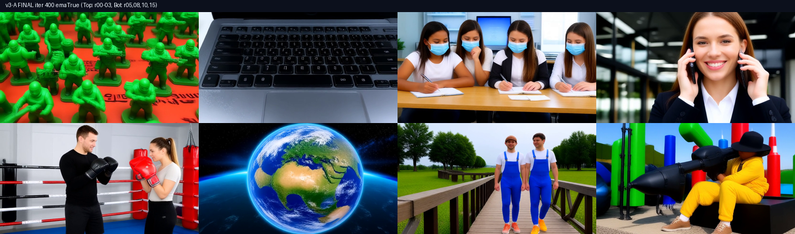
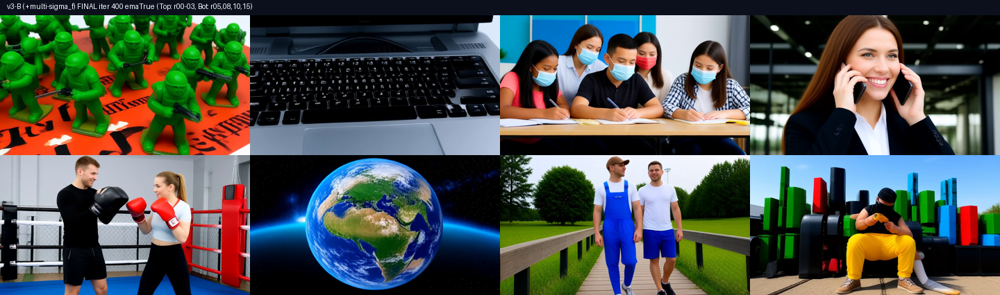

Wan2.1-T2V-1.3B EMA checkpoints at exact 400 generator updates across 64 evenly-strided official VBench prompts (7 dimensions) + K=8 multi-seed DINOv3 diversity, plus 50-step Wan2.1-T2V-14B Teacher visual reference.
0.173–0.176 vs. Teacher 0.170 — proving zero mode collapse!). Standard DMD's higher raw motion/diversity numbers come with severe visual/consistency degradation (Imaging 55.2% vs. Teacher 70.1%, Subject 89.5% vs. 97.2%). The single genuine remaining gap to the 50-step 14B Teacher is RAFT optical-flow Dynamic Degree (0.0%–10.9% vs. Teacher 32.8%).
| Metric (64 Official Extended Prompts + K=8 Diversity) | 50-Step 14B Teacher (Ceiling · 50 NFE) |
Standard DMD (iter 2000 · WITH FakeScore) |
Scheme B v1 (2-step mid-σ · 0 FakeScore) |
v3-A (4-step high-σ · 0 FakeScore) |
v3-B (+multi-σf · 0 FakeScore) |
|---|---|---|---|---|---|
| Imaging Quality ↑ | 70.13% | 55.23% | 72.54% | 72.99% | 71.31% |
| Aesthetic Quality ↑ | 61.80% | 49.73% | 61.16% | 62.24% | 62.90% |
| Subject Consistency ↑ | 97.19% | 89.53% | 98.60% | 98.38% | 98.19% |
| Background Consistency ↑ | 96.83% | 92.42% | 98.12% | 97.10% | 97.80% |
| Motion Smoothness ↑ | 99.14% | 98.08% | 99.10% | 99.05% | 99.09% |
| Temporal Flickering ↑ | 98.48% | 96.88% | 98.81% | 98.34% | 98.65% |
| Dynamic Degree (RAFT Optical Flow) ↑ | 32.81% (Teacher) | 85.94% (unstable) | 10.94% | 0.00% | 4.69% |
| DINOv3 Diversity (K=8 Independent Seeds) ↑ | 0.1700 (Teacher) | 0.3942 (unstable) | 0.1733 | 0.1762 | 0.1762 |
| Raw Frame-Diff Motion / First-to-Last Span | 0.0152 / 0.091 | 0.0312 / 0.125 | 0.0119 / 0.086 | 0.0166 / 0.149 | 0.0135 / 0.095 |
| Metric (All 4-Step Wan2.1-1.3B EMA @ 400 Gen Updates) | Standard DMD (iter 2000 · WITH FakeScore) |
Scheme B v1 (2-step mid-σ · 0 FakeScore) |
v3-A (4-step high-σ · 0 FakeScore) |
v3-B (+multi-σf · 0 FakeScore) |
|---|---|---|---|---|
| Imaging Quality ↑ | 57.27% | 73.33% | 74.73% (+17.5%) | 73.15% |
| Aesthetic Quality ↑ | 47.10% | 59.67% | 61.78% (+14.7%) | 60.88% |
| Subject Consistency ↑ | 88.51% | 98.78% | 98.37% | 98.59% |
| Background Consistency ↑ | 91.26% | 97.76% | 96.98% | 97.79% |
| Motion Smoothness ↑ | 97.94% | 99.13% | 99.12% | 99.15% |
| Temporal Flickering ↑ | 96.46% | 98.84% | 98.50% | 98.79% |
| Dynamic Degree (RAFT Optical Flow) ↑ | 85.94% | 18.75% | 1.56% | 6.25% |
| DINOv3 Diversity (K=8 Independent Seeds) ↑ | 0.5855 | 0.4010 | 0.4242 | 0.4129 |
| Raw Frame-Diff Motion / First-to-Last Span | 0.0354 / 0.155 | 0.0116 / 0.091 | 0.0150 / 0.155 | 0.0121 / 0.098 |
Bottom row shows 4 action prompts (boxing sparring, rotating Earth in space, two men walking on a boardwalk, action scene) at iter 400 EMA — clean, sharp, and free of multi-person hallucinations:


v3-A (4 giant Δσ≈0.24 Euler steps) actually lowered RAFT Dynamic Degree from 18.75% (v1) down to 1.56%. Adding multi-noise feature extraction (v3-B) lifted it 4× back to 6.25%, confirming high-noise Teacher features help transmit motion, but the positive targets themselves lack genuine 50-step Teacher dynamics.hfrm[t] − hfrm[t−1] on spatially pooled features while lowering w: 0.50 → 0.35 was hacked by a global brightness/blue color ramp from frame 0 to frame 48 (burned out by iter 150). Restoring w = 0.50, td = 0 completely eliminated the color ramp across both v3-A and v3-B.Decoupled CFG + multi-σf Teacher-Feature Drifting (w = 0.50, zero FakeScore).